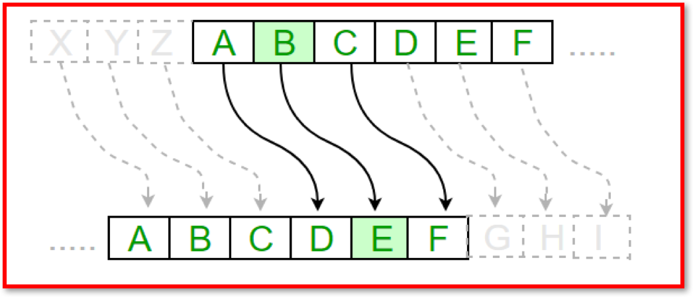

3.5.3 Network Security
Table of Contents
- 1. Network Security
1 Network Security
Learn It: The Importance of Network Security
- Internet Protocol Address (IP Address) - A
unique numberthatidentifiesevery computer/device connected to the Internet. No two IP addresses are the same. - If your computer
requestsa web page, your computer/device's IP address specifies where that web page should ultimately be delivered. - Networks are much
more vulnerableto hackers thanstandalone computers/devices, since a hacker can access a network throughone computer/devicein order to gain access to other devices on the same network. - This can have
serious implicationsfor an organisation, resulting in data theft, corruption of data, denial of service,/ or /other damage caused by malware being installed on network servers. - Security on a network is
very importantto prevent unauthorisedaccessto data,misuseormodificationof data including installing viruses and other malware. - With more data being shared, more data is falling into the wrong hands. Organisations are now hiring dedicated professionals to keep
data secure, as breaches candamagean organisation's profitability and reputation. - Even an individual can lose out financially if their
credit carddetails arestolen.
Learn It: Methods of keeping a Network Secure
Network security has two main goals:
- To prevent unauthorised people from accessing resources.
- To allow authorised people to access the resources they need.
Methods used to maintain network security include:
- Authentication.
- Encryption.
- Firewalls.
- MAC Address Filtering.
Learn It: Authentication
Measures put in place to ensure that a person trying to access data on a network, are who they say they are! I.E. a genuine authorised user.
Authentication can take place in a number of ways: Password Protection
- In a networked environment like Bourne Grammar School or a business, there are many computers/devices being used by more than one person.
- Students may or may not have their
own computers/devicesand the easiest way to stop unauthorised access to your computer or your files is to use a combination of aUsernameandPassword. - Passwords should
neverbe shared with other people, written down and should be strong, this means not easy to guess (6-8 characters, upper/lower case letters, symbols and numbers). - Some companies including Bourne Grammar School
makestudentschangetheir passwords every month/term. - For
additional securityagainst peopletryinglots of different passwords to get into someone else's account, theaccountcan belockedafter a certain number of attempts.
User Access Levels
- User access levels can be
setfor disks, folders and files, so that users can only access what they are allowed to access. - Here at school you can only
readfiles on a shared area (Open DriveG:), but you are not able toeditthem as they are Read-Only-Access. Some folders you won't even be able to see. - The teacher will have Read-Write Access to these file and folders.
- In a
work environment, the Accounts staff will hav access topayroll details, but other departments will not. - The Data Protection Act 1998, says that
employersmust keep personal data secure, so setting the appropriate access rights is a legal responsibility as well as a good idea.
- Test your password strength: Click here.
Learn It: Encryption
Scrambling data using a key to ensure that it makes no sense to anyone who intercepts it. When it is received, the recipient also has a key, which is used to decrypt the data, returning it to its readable format.
Encryption
- Encryption is
primarilyused to protect data and prevent it frombeing hackedoraccessed illegally. - Data that is being
transferredover a network or the Internet is vulnerable to hackers. For example, someone who uses an online shopping site will have to type in their *payment details8, such as credit or debit card numbers - It isessentialthat thisinformationiskept secure. - If they were paying by using another payment system such as,
PayPalorApplePay, they would have to type in their email address and password, which needs to bekept safefrom anyoneinterceptingthe transmission. - Online Banking - Accessing your bank account details online needs to be
very secureto protect from hackers trying to steal this data. - Whilst encryption won't prevent hacking, it
makesthedata unreadableunless the recipient has the necessary decryption tools.
Encryption Technology uses:
- Plaintext - The original message/data to be encrypted.
- Ciphertext - The encrypted message/data.
- Encryption - The process of converting plaintext into ciphertext.
- Decryption - The process of converting ciphertext into plaintext.
- Key - A sequence of numbers used to encrypt or decrypt, often using a mathematical formula.
- Encryption Algorithm - The method for encrypting the plaintext.
A very simple example encryption cipher is Caesar Shift Cipher, in which each letter is replaced by a letter n number of positions further in the alphabet. The key in this case is 3.

- Obviously this is not a very useful methof of encryption in practice, since it is very easy to discover they key and decrypt the message. There are many methods of strong encryption which make the ciphertext virtually impossible to break.
Try It: Caesar Cipher
- Given the key 5, decode the following encrypted message: KNWJHWFHPJW BNQQ QTXJ
Learn It: Firewalls
These can either be hardware, software or both. A firewall can be instructed to block certain traffic (Such as all emails or any traffic from a suspect IP address) or to only allow certain traffic (Such as from a single, trusted device), blocking everything else.
Firewalls
- A firewall is a
network security systemthat monitors and controls incoming and outgoing network traffic based on predetermined security rules. - A firewall typically
establishesa barrier between a trusted internal network and untrusted external network, such as the Internet. - A *Firewall is primarily designed to prevent unwanted Internet traffic from gaining access to the LAN.
Unauthorisedusers external to the network areblockedby the firewall, which can also block any attempts to gain access viacertain portsused for restricting data transmission such asFTP.- Typical firewall
mechanismsforrestricting datainclude, blocking data from aparticular IP addressor on certainportsthat indicated a type of traffic that was not wanted, such as an attempt to access FTP. - Operating Systems (OS), like
Microsoft WindowsandmacOShave firewall utilities built-in, but you can also buy firewall software separately. Third-party firewallsoftware also exist, such as Zone Alarm, Norton Personal Firewall, Tiny, Black Ice Protection,* and *McAfee Personal Firewall. Many of these offer free versions or trials of their commercial versions.
Several types of firewalls exist:
- Packet filtering.
- Circuit-level gateway implementation.
- Acting as a proxy server.
- Web application firewall.
Firewalls Explained Video
Learn It: MAC Address Filtering
Each computer/device has a MAC (Media Access Control) address which, unlike an IP address, cannot be changed. Based on this unique identifier, specific devices can be either permitted onto, or blocked from a network.
MAC Address Filtering
- MAC address filtering
createsa list ofallowed deviceswhich you need on your Wi-Fi and thelistofdenied deviceswhich you don’t want on your Wi-Fi. It helps in preventing unwanted access to the network. So, we can blacklist or whitelist certain computers based on their MAC address. - We can also configure the filter to allow connection only to those devices included in the
whitelist. White lists providegreater securitythanblacklistsbecause the router grants access only to selected devices. - This has a
weaknessin that on a wireless network the device with the propercredentialssuch asSSIDandpasswordcan authenticate with the router and join the network which gets an IP address and access to the internet and any shared resources, but itdoes not identifywhichindividualis using a device. - That has to be done using a username and password combination, user access levels, encryption or using the firewall to block certain
portsorIP addresses. - MAC address filtering adds an
extra layer of securitythatchecksthe device’s MAC address against a list of agreed addresses. If the client’s address matches one on the router’s list, access is granted otherwise it doesn’t join the network.
Badge It: Exam Questions
Silver - Answer the following questions:
- What are the two main goals of network security? (2 Marks)
- What are the four methods used to maintain network security? (4 Marks)
Upload to Fundamentals of Computer Networks - Network Security: Silver on BourneToLearn
Badge It: Exam Questions
Gold - Answer the following questions:
- Jane is a network administrator at a secondary school. She has put in place measures to prevent attacks on the school's network, including firewalls, MAC address filtering and different user access levels.
- a) Explain how a firewall can prevent attacks on the school's network? (2 Marks)
- b) Explain why the school's network needs to have different user access levels? (3 Marks)
- c) Describe how MAC address filtering supports security on the school's network? (3 Marks)
Upload to Fundamentals of Computer Networks - Network Security: Gold on BourneToLearn
Badge It: Exam Questions
Platinum - Answer the following questions:
- Identify the difference between whitelist and blacklist filtering. Explain which is the more secure. Explain which one is more flexible? (4 Marks)
- "Schools should ban all onsite wireless connectivity for students." Discuss this statement? (8 Marks)
Upload to Fundamentals of Computer Networks - Network Security: Platinum on BourneToLearn